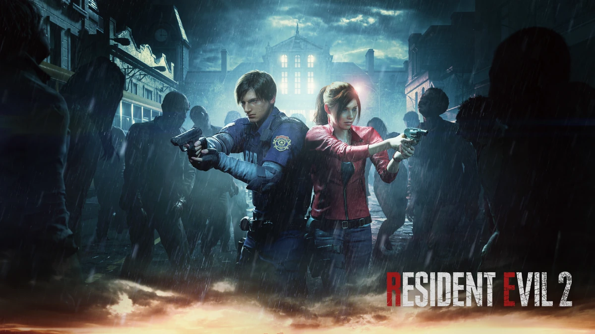

Resident Evil 2 Remake (2019) Protagonistas: Leon S. Kennedy e Claire Redfield Ameaça Principal: Zumbis, Mr. X (Tyrant) e o G-Virus Resumo: O novato policial Leon e a estudante universitária Claire chegam a Raccoon City apenas para encontrar a cidade devastada por um surto zumbi causado pela corporação farmacêutica Umbrella. Separados logo no início, eles exploram a delegacia de polícia, os esgotos e o laboratório subterrâneo NEST. Ao longo do caminho, Leon se alia à espiã Ada Wong, enquanto Claire protege a pequena Sherry Birkin, filha do criador do vírus. Após lidarem com a perseguição implacável do Mr. X e as mutações monstruosas de William Birkin, os sobreviventes ativam a autodestruição do laboratório e escapam da cidade em um trem de carga.